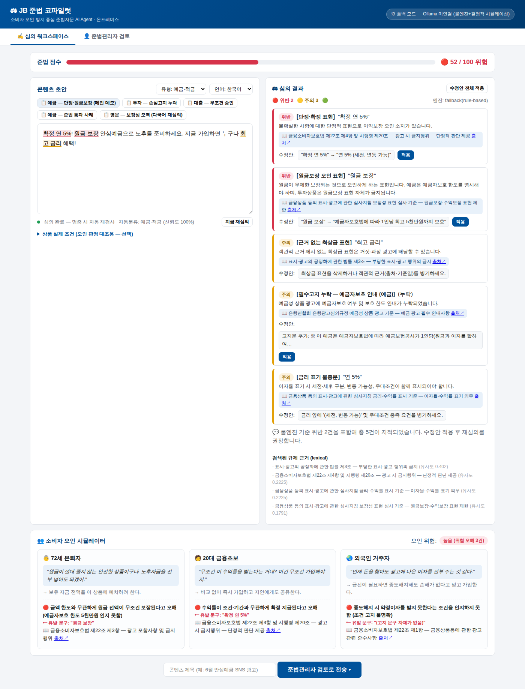

JB금융그룹 Fin:AI Challenge · 지정주제2 Compliance AI · 제출물 ② 기능명세서
JB 준법 코파일럿 — 기능명세서
소비자 오인 방지 중심 준법자문 AI Agent 서비스
주제준법자문가 AI Agent 서비스 개발 (지정주제2)
작성일2026-06-11
산출물동작하는 MVP(코드+README) · 본 기능명세서 · 시연 시나리오
제약 준수무료·오픈소스 모델만 사용 · 100% 온프레미스
1서비스 개요
대고객 금융 콘텐츠(광고·안내문)를 작성 시점부터 AI가 1차 심의하고, 소비자(고령자·금융초보·외국인)가 어떻게 오해하는지 시뮬레이션해 위험을 드러내며, 규제 근거를 인용한 수정안을 제시한다. 준법관리자는 검토·승인만 수행하고 전 과정이 감사로그로 남는다. 외부 API 없이 오픈모델로 구동되는 온프레미스 AI Agent.
1.1 해결하려는 문제 (은행 제시 현행·한계 기반)
구분
내용
현행
대고객 콘텐츠 전반을 준법관리자가 대부분 수작업 심의. 외국어 콘텐츠도 동일 인력·동일 방식. 심의 지연 → 배포 지연 → 마케팅 적시성 손실. 심의 품질 편차와 휴먼에러.
한계
준법 심의가 병목이 되어 콘텐츠 적시성·확장성 제한. 다국어·다채널 확장 시 심의 리소스 선형 증가. 규제 변경의 즉시 반영 어려움.
본질
금융 광고 규제(금소법 §22 등)의 목적은 "표현 적발"이 아니라 소비자 오인·기만 방지다. 기존 수작업·표현매칭 도구는 "실제 소비자가 어떻게 오해하는가"를 직접 다루지 못한다.
1.2 대상 사용자와 사용 상황
사용자
사용 상황
제공 가치
마케팅·상품·지점 담당자
광고/SNS/안내문 초안 작성 중 — 타이핑을 멈추거나 붙여넣는 순간 자동 심의
배포 전 사전 차단, 수정안 원클릭 적용, 심의 대기 없는 작성
준법관리자(준법감시부)
AI 1차심의가 끝난 콘텐츠의 검토·승인
전수 초벌심의 자동화 → 판단 업무에 집중, 일관된 기준, 감사추적
(간접) 금융소비자
배포된 콘텐츠 열람
오인 유발 표현이 제거된 명확·공정한 정보
운영 시나리오 (준법감시부·마케팅부의 하루) — 작성 시점 예방부터 배포 연계까지 한 흐름:
[Phase 0 · 상시] 규제 자동 추적F14 — 매일 새벽 규제 피드(운영: 법제처 OpenAPI)에서 고시·법령 개정을 감지 → 영향 콘텐츠 분석 → 룰 변경 자동 제안. 준법감시인이 검토·승인하면 룰셋 최신화. ("사람이 일일이 찾아 넣어야 하나" 해소 — 단 적용은 사람 승인)
[Phase 1 · 작성] 상품조건 자동 주입 + 실시간 예방F16·F11·F5 — 담당자가 초안 작성, 상품코드 선택 시 코어뱅킹(운영 연동)에서 전체 조건 자동 주입. 멈추면 즉시 룰 검사(0.03초), 이어 LLM 심의·오인 시뮬레이터 보강. 헤드라인에 "👵 72세가 이렇게 오해한다"가 떠 작성 시점에 위험 인지.
[Phase 2 · 자가 개선]F12·F13 — [🚀 자동 개선]으로 통과까지 자율 수정(미수렴 시 사람 에스컬레이션). 법규 + JB 자체 내규(준법부가 평문 등록)를 함께 적용.
[Phase 3 · 검토·승인]F8·F9 — [검토 전송] → 준법감시인이 AI 1차심의·페르소나 오해·규제 인용을 근거로 승인/반려. 결정이 감사로그에 영구 기록.
[Phase 4 · 배포 자동 연계]F15 — 승인 즉시 채널(앱푸시·SMS·이메일·SNS·CRM, 운영: FCM/SNS/SendGrid/알림톡)로 자동 발송. 미승인 차단. "AI 자동개선 → 사람 승인 → 시스템 배포"가 분리 기록되어 금감원 검사 대응. ("승인 결과 자동 연계" 해소)
[Phase 5 · 다국어]F10 — 전북 외국인 고객용 외국어 버전을 승인본에서 자동 생성·재심의. 비-한/영은 신뢰도 플래그 + 사람 검토 + KO 피벗으로 환각 방어.
전 과정 온프레미스 + 휴먼인더루프모든 자동화(규제 룰·자가 개선·배포)는 사람의 승인을 거친다. 외부 연동(법제처·발송서버·코어뱅킹)은 어댑터로 분리되어 데모는 목/피드로 동작을 증명하고 운영에서 실연동으로 교체된다.
1.3 문제의 중요도 — 금융업·JB 관점
제재 리스크 직결: 금소법 §22 위반 광고는 과징금·기관제재 대상. 광고 1건의 오인 표현이 불완전판매 분쟁으로 이어지는 구조적 리스크.
JB 특수성: 전북·광주은행은 지역 밀착 마케팅 빈도가 높고, 전북 지역 외국인 거주자 고객 비중 증가로 다국어 콘텐츠 수요가 커지는 반면 심의 인력은 한정적.
서비스 과제 전환성: 입력(콘텐츠 초안)·출력(심의 리포트·승인 상태)·사용자·프로세스 접점이 명확해 그대로 내부 시스템 과제로 전환 가능 — 본 MVP가 그 증명.
2금융업무 연계 및 기대효과
2.1 업무 프로세스 접점 (As-Is → To-Be)
As-Is 기획 → 초안 작성 → (수일 대기) 준법 수작업 심의 → 반려·재작성 반복 → 승인 → 배포
▲ 병목·편차·적시성 손실
To-Be 기획 → 초안 작성 ⟲ AI 실시간 심의·수정안 (작성 중 즉시, 무한 반복 무비용)
→ 🚀 준법 오토파일럿: 위반 초안을 통과까지 자율 개선 (선택 — 수정 왕복 자동화)
→ 준법관리자 검토·승인 (AI 리포트 기반 판단만) → 배포가능 + 감사로그
→ (다국어) 승인본 기반 자동 생성 + 재심의
배포 전 전수 1차심의 + 일관된 룰 기준 → 휴먼에러·품질편차 감소. 오인 시뮬레이터로 "규정상 합법이지만 오해 유발" 영역까지 가시화.
고객가치
취약계층(고령·초보·외국인) 관점의 오해를 사전 제거 → 불완전판매·민원 감소, 신뢰 제고.
수익기회
심의 리드타임 단축 → 마케팅 적시성 회복(시즌·금리 이벤트 대응). 콘텐츠 생산량 확대 가능.
그룹 AX 부합
"사람이 하던 반복 판단을 AI가 1차 수행, 사람은 최종 판단" — 그룹 AX·디지털 전환이 지향하는 업무방식 전환의 전형적 사례.
2.3 규제·보안·개인정보·내부통제 고려 (설계에 내장)
데이터 주권: 심의 대상(미공개 마케팅 자료·내부 심의기준)은 외부 전송 불가 정보 → 100% 온프레미스·외부 API 미사용을 아키텍처 전제로 채택. 망분리 환경에서도 구동 가능.
개인정보: 처리 대상은 콘텐츠 텍스트뿐, 고객 개인정보를 수집·저장하지 않음. 페르소나는 가상 프로필.
내부통제: 모든 제출·승인·반려·번역이 감사로그(누가/언제/근거)로 기록 — 광고심의 기록 보존 의무 및 내부통제 점검에 대응.
책임소재: AI는 1차심의·권고만 수행하고 배포 결정 권한은 항상 사람(준법관리자)에게 있는 Human-in-the-loop 구조로 책임 경계를 명확화.
3차별점
차별점
내용
① 소비자 오인 시뮬레이터 헤드라인 기능
고령자·금융초보·외국인 페르소나가 광고를 1인칭으로 읽고 오해하는 과정을 재현 → 위험 오해 + 유발 문구 + 금소법 조항 연결. UI의 헤드라인으로 배치해 화면을 열면 "이 광고를 소비자가 어떻게 오해하는지"가 가장 먼저 보인다. 해외 유사 제품(Saifr, PerformLine 등)에도 없는 지점이며, 규제의 본질(오인 방지)을 정면 공략.
② 작성시점 실시간 예방
사후 배치 심의가 아니라 작성 중(멈춤·붙여넣기) 자동 검사 → 병목·적시성 문제를 근본 해결.
③ 온프레미스·오픈모델
해외 제품은 영어권 규제 기반 SaaS. 한국어·한국 규제 + 온프레미스는 은행이 실제 도입 가능한 유일한 형태.
④ 준법 오토파일럿 자율 에이전트
위반 초안을 심의→고쳐쓰기→재심의로 🟢통과까지 자율 반복하는 목표지향 에이전트. 합격 판정은 결정적 룰엔진이 검증해 LLM의 합격 위장(환각)을 차단하고, 최종 게시는 사람 승인을 거친다. "심의 도구"를 넘어 "통과시켜 주는 에이전트"로 — 평가 기준의 AI Agent 정의(판단·행동·검증/개선·종료조건)를 문자 그대로 구현. (검증: 🔴46→🟡82→🟢88 자율 수렴)
승인본 → 영문 버전 + 영문 룰셋 재심의(오역 검출). 비-한/영 언어는 신뢰도 플래그 + 사람검토 권장
구현 ✓
F11
실시간 검사
입력 멈춤(1.2s)/붙여넣기 → 자동 심의
구현 ✓
F12
★준법 오토파일럿 (자율 개선 루프)
위반 초안 → 통과/종료조건까지 자율 반복 개선 + 회차별 근거 추적
구현 ✓
F13
내부 심의기준(내규) 자연어→룰
평문 내규 → AI 룰 변환 → 법규와 함께 적용 (비개발자·〔내규〕 배지)
구현 ✓
F14
규제 자동 추적·영향분석·룰 제안
규제 피드 변경 감지 → 영향 콘텐츠 분석 → 룰 자동 제안(사람 승인)
구현 ✓
F15
마케팅 배포 Last-Mile
승인 콘텐츠 → 채널(푸시·SMS·이메일·SNS·CRM) 자동 연계 + 감사로그
구현 ✓
F16
상품 DB 연동
상품코드 → 전체 상품조건 자동 주입 (코어뱅킹 연동 슬롯)
구현 ✓
F17
유형 확장 (카드/이벤트/보험)
룰·체크리스트 확장
본선
F18
콘텐츠 큐 대시보드
리스크 등급 일람
본선
6.1 은행 제시 요구사항 매핑
은행이 제시한 내용
대응 기능
(기대①) 최신 규제+내부기준 자동 추적
F2 규제 지식베이스 + F14 규제 자동 추적(피드 변경 감지→영향분석→룰 제안) + F13 내규 자연어→룰. 운영: 법제처 OpenAPI 어댑터
(기대②) 위반가능성·표현리스크·수정제안 자동 도출
F3+F4 하이브리드 심의 → 등급·인라인 수정안 + F12 오토파일럿 자율 개선
(기대③) 준법관리자는 검토·승인 역할로 전환
F8 승인 워크스페이스 (AI 1차심의 → 사람 결정)
(기대④) 승인 결과의 프로세스 자동 연계
승인 → 배포가능 전환 + F9 감사추적 + F15 마케팅 Last-Mile(채널 자동 발송, 미승인 차단). 운영: FCM·SNS·SendGrid·알림톡 어댑터
(기능①) 규제 문서 검색·참조 근거 제공
F2 RAG — 모든 지적에 조항 출처 인용
(기능②) 다국어 이해 + 리스크 분류
F10 — 영문 룰셋 재심의로 오역·고지 누락 검출 + 비-한/영 신뢰도 방어
(기능③) 유형별 기준 구조화 + 룰+LLM 결합
F1 분류 라우팅 + F3 룰(결정적) + F4 LLM(뉘앙스) + F16 상품DB 자동 주입
7MVP 구현 현황 및 검증

MVP 실제 구동 화면 — 우측 헤드라인 「👥 소비자는 이렇게 오해합니다」에 페르소나 3종의 1인칭 오해·유발 문구가 먼저 보이고(🔴 위험), 좌측 에디터엔 위험 문구 자동 밑줄, 하단 검토 결과엔 규제 출처 인용
실행: pip install -r requirements.txt && uvicorn app.main:app 1분 구동. LLM 미연결 시 폴백 모드로 전 기능 시연 가능(평가 환경 의존성 제거).
자동 검증: 테스트 52건 전체 통과 — TDD 정답셋(픽스처 5종 → 기대 룰 플래그), 유형 분류, 등급 판정, 수정 적용 후 점수 상승, 페르소나 오해 검출, 영문 오역 검출, 인용 제한, 초단문 스킵, 오토파일럿(수렴·종료보장·합격무결성·폴백), 내규 변환·규제 추적·배포·상품DB·다국어 신뢰도.
일관성: 설계 문서(HTML) ↔ 본 기능명세서 ↔ 코드 ↔ 사용·로직 설명서가 동일한 기능 ID(F1~F18)·파이프라인 번호(①~⑧)로 정합.
문서 산출물: 설계 문서 · 사용 설명서(PDF) · 로직 설명서(PDF) · README · 본 기능명세서.
8데이터·오픈소스 출처 및 라이선스
자원
라이선스/출처
제약·검토사항
Qwen2.5-7B-Instruct
Apache 2.0 (Alibaba)
상업적 사용 가능. 금융권 도입 시 모델 거버넌스 평가 필요
Ollama
MIT
온프레미스 서빙, 외부 통신 없음
BGE-m3 (선택)
MIT (BAAI)
상업적 사용 가능
FastAPI / Uvicorn / PyYAML / httpx
MIT / BSD
—
법령 (금소법·표시광고법·자본시장법 등)
국가법령정보센터 — 법령은 저작권법 §7 비보호 저작물
MVP 코퍼스는 요약·재구성본 → 운영 시 원문 전문 수록·법무 검증
심사지침·협회 광고심의 규정
금융위·은행연합회·금융투자협회 공개자료
요지 기반 룰화. 운영 도입 시 원문 대조 필요
JB 내부 심의 체크리스트
가상 데이터 (시연용 자체 작성)
실제 내규로 교체하는 슬롯 시연 목적 (F13 내규 기능으로 주입)
규제 변경 피드(reg_feed)·상품 카탈로그(products)
가상 데이터 (시연용)
F14는 법제처 OpenAPI, F16은 코어뱅킹 상품DB API로 교체하는 어댑터 슬롯
상용 API
사용 없음
대회 제약 및 온프레미스 원칙 준수
9확장성 및 발전 경로
9.1 확장 축
축
확장 내용
계열사
전북은행·광주은행(은행 광고) → JB우리캐피탈(대출성 룰셋 재사용) → JB자산운용(투자광고 — 자본시장법 룰 이미 보유). 룰·코퍼스의 types 라우팅 구조가 그대로 확장 단위
콘텐츠 유형
카드·이벤트·보험(방카) — YAML 룰 추가만으로 확장 (F14)
언어
영어(구현) → 베트남어·중국어 — 전북 외국인 거주자 다수 언어. Qwen2.5 다국어 역량 활용
채널
웹 에디터(구현) → 사내 결재·CMS 플러그인, 콜센터 스크립트·상품설명서 심의
9.2 발전 경로 (PoC → 서비스화)
본선(고도화) F14 규제추적: 데모 피드 → 법제처 OpenAPI 실연동 · F15 배포: 실채널 API 연동
F16 상품DB: 코어뱅킹 실연동 · Qdrant 하이브리드 · 형태소 룰 매칭 · Next.js UI
PoC 준법감시부와 과거 심의 사례 50~100건 블라인드 비교 (AI vs 사람 심의 일치율)
파일럿 1개 부서 신규 콘텐츠에 병행 적용 → 검출률·시간 절감 측정, 룰 캘리브레이션
내부 적용 전 계열사 광고심의 표준 도구화, 내규 코퍼스 정식 등재, 내부통제 보고 연계
서비스화 그룹 공통 'Compliance AI 플랫폼' — 콘텐츠 외 약관·스크립트·공시로 확대
10운영 리스크 대응
리스크
대응 (구현됨 / 계획)
환각(허위 인용)
구현: 인용을 검색된 코퍼스 조항 id로 화이트리스트 제한 + 지적 문구의 원문 존재 검증 + 근거 부족 시 "근거 불충분" 명시